Jede Nachricht auf dem Anrufbeantworter erscheint von selbst im Audiopostfach von Praxkas: abgeschrieben, kurz zusammengefasst und nach Rezepten, Terminabsagen und Anliegen sortiert. Bei Rezeptwünschen stehen die gewünschten Präparate direkt auf der Kachel.
Gleich nach dem Anmelden zeigt das Dashboard, wie viele neue Nachrichten je Bereich warten. Ein Klick auf eine Karte öffnet das Audiopostfach mit genau diesem Bereich. Darunter stehen die offenen Anrufe als Kurzliste.
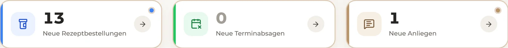
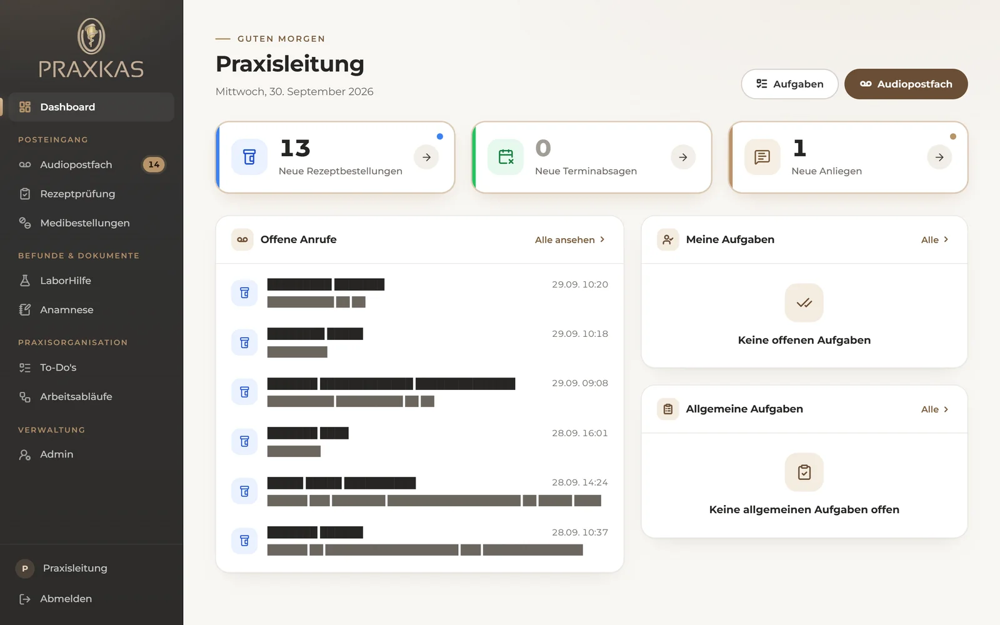
Jede Nachricht ist eine kompakte Kachel, die neueste steht oben links. Die farbige Linie oben zeigt den Bereich: blau für Rezepte, grün für Terminabsagen, gold für Anliegen. Dringende Nachrichten haben einen roten Rand und den Hinweis „dringend“.
In der Seitenleiste zeigt die Zahl neben „Audiopostfach“ jederzeit, wie viele Nachrichten noch neu sind.
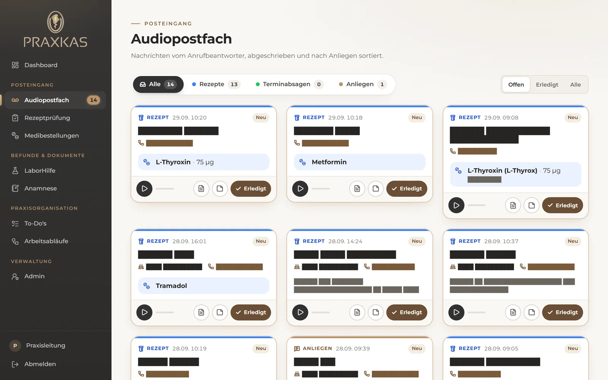
Links oben lässt sich der Bereich wählen: alle Nachrichten, nur Rezepte, nur Terminabsagen oder nur Anliegen. Die Zahl neben jedem Reiter nennt die neuen Nachrichten darin. Rechts oben wird umgeschaltet zwischen Offen (noch zu erledigen), Erledigt und Alle.
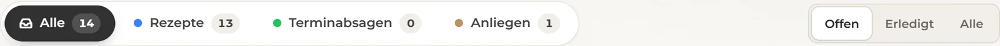
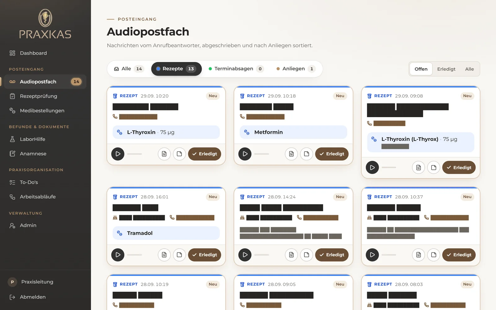
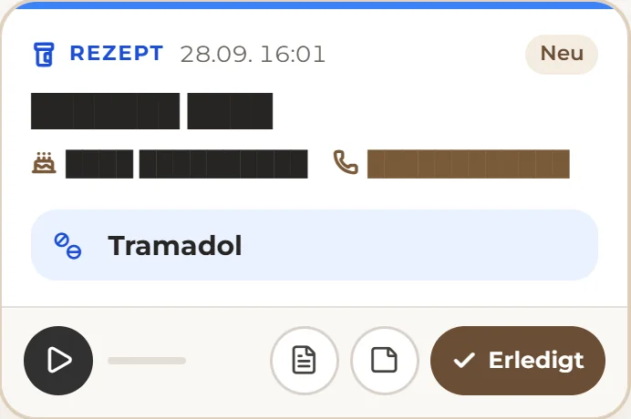
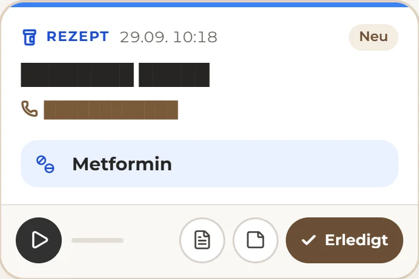
Der runde Knopf links spielt die Aufnahme ab. Es läuft immer nur eine Aufnahme gleichzeitig.
Der Knopf mit dem Blatt klappt die vollständige Abschrift direkt in der Kachel auf, ein zweiter Klick klappt sie wieder zu. Das hilft bei ungewöhnlichen Präparatnamen oder wenn etwas unklar ist.
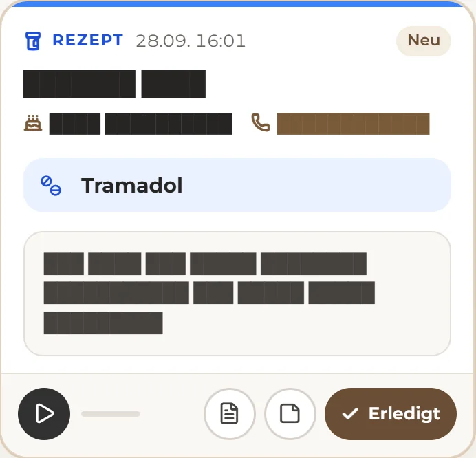
Über den Notiz-Knopf lässt sich ein interner Vermerk hinterlegen, etwa „Rezept liegt vorne“ oder „Rückruf erfolgt“. Eine Kachel mit Notiz ist am Knopf mit einem Punkt markiert.
Erledigt nimmt die Nachricht aus der Ansicht „Offen“. Unter „Erledigt“ bleibt sie weiter auffindbar.
Gleichzeitig bekommt die zugehörige Mail im Postfach kontakt@ das Schlagwort „erledigt“, dasselbe, das in Thunderbird bisher von Hand gesetzt wurde. In Thunderbird ist damit auf jedem Praxis-Rechner sichtbar, dass die Nachricht schon bearbeitet wurde. Wird „Erledigt“ in Praxkas zurückgenommen, verschwindet auch die Markierung, eine von Hand gesetzte Markierung bleibt dagegen immer erhalten.
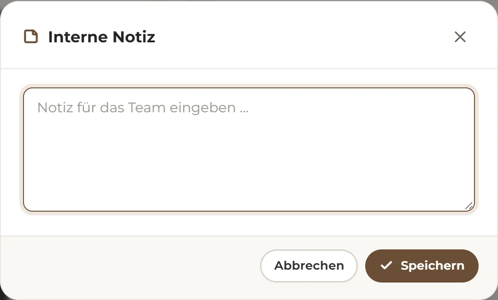
Auch hier gilt: kurz statt lang. Bei einem Anliegen steht das Wichtigste in einem Satz, dazu ein Stichwort wie „Befund“ oder „Überweisung“. Bei einer Terminabsage stehen der abgesagte Termin und der Grund, und falls gewünscht der Hinweis „möchte neuen Termin“.
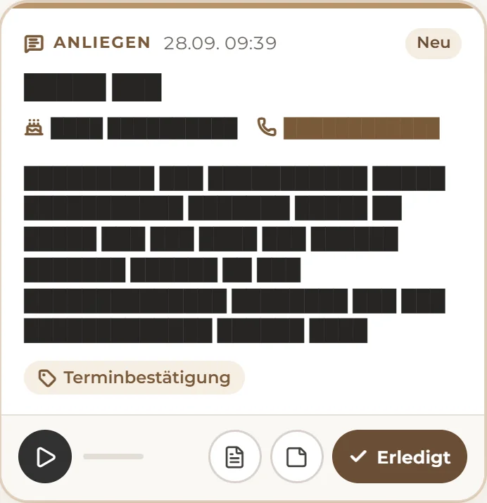
Anliegen
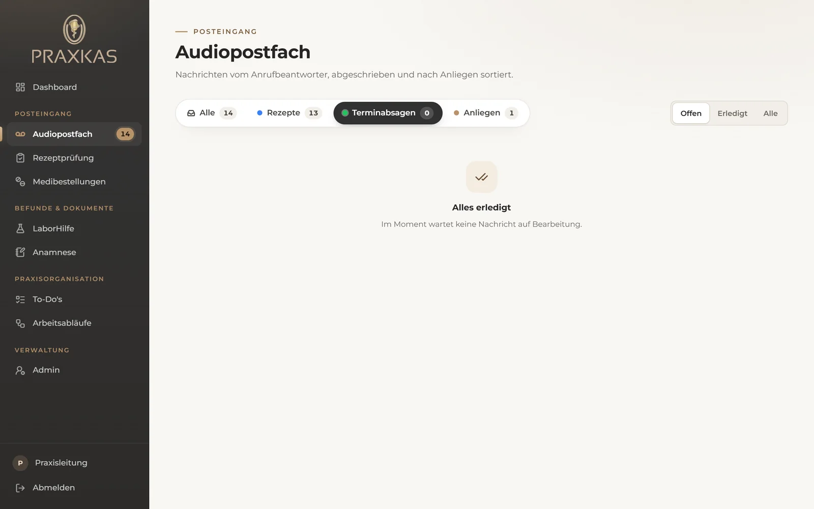
Terminabsagen. Zum Zeitpunkt der Aufnahme lag hier keine neue Nachricht.
Im Praxis-WLAN ist Praxkas auch am Handy oder Tablet erreichbar. Die Kacheln stehen dort untereinander, das Menü öffnet sich über das Symbol oben links. Die Rückrufnummer lässt sich direkt antippen.
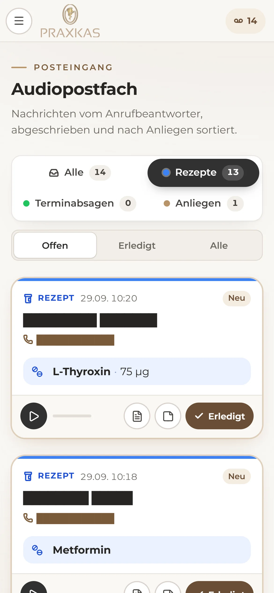
Abschrift und Zusammenfassung entstehen automatisch. Namen und Präparate können verhört sein. Bei „unsicher“ oder im Zweifel hilft ein Blick in die Abschrift oder kurz die Aufnahme anhören.
Manchmal sprechen Anrufer auf die falsche Leitung, z. B. eine Terminabsage auf die Rezept-Leitung. Die Kachel steht dann unter „Rezept“, die Zusammenfassung zeigt aber, worum es wirklich geht.
Praxkas liest die Mails mit. Nichts wird im Postfach gelöscht, verschoben oder als gelesen markiert. Einzige Ausnahme ist das Schlagwort „erledigt“ bei erledigten Nachrichten. In der Testphase werden höchstens die 30 neuesten Mails übernommen.
Fehlt die Markierung „erledigt“ an einem Praxis-PC, dort einmal in Thunderbird unter Einstellungen → Allgemein → Schlagwörter ein Schlagwort mit dem Namen „erledigt“ anlegen. Danach erscheinen die von Praxkas gesetzten Markierungen auch dort.
Die Aufnahmen werden auf dem Praxis-PC abgeschrieben. Für die kurze Zusammenfassung geht nur der Text an die KI von Anthropic, auf Grundlage eines Auftragsverarbeitungsvertrags. In diesem Dokument sind Namen, Geburtsdaten, Rufnummern und Abschriften unkenntlich gemacht.